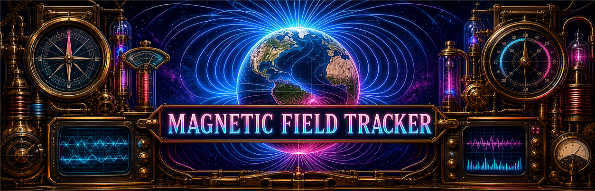

NOAA WMM2025
The World Magnetic Model is the standard navigation model for Earth's main magnetic field. NOAA/NCEI states WMM2025 was released on December 17, 2024 and remains valid until late 2029.
NOAA/NCEI WMM
Magnetic Field Tracker

This tool combines the current WMM2025 main field with NOAA's modeled magnetic-dip-pole history from 1590 onward. The globe shows geographic coastlines, both pole tracks, and regional intensity structure—including the weak South Atlantic Anomaly. It does not treat short-lived geomagnetic storms as permanent main-field change.
WMM2025 total-intensity colors run from lower (violet/blue) to higher (yellow/orange). Drag to rotate; scroll or pinch to zoom.
The chart separates three source frames: the approximately 40% decline over 400 years cited by Kabat (2016) from Turner (2011); ESA's approximately 9% global-average decline over two centuries; and an accelerated rate-change scenario transitioning from 5% per century to 5% per decade. ESA mission material reports nearly 8% axial-dipole decline over 150 years and regional South Atlantic weakening up to 10% in 20 years, so the accelerated curve is regional/scenario context rather than a global-average measurement.
The World Magnetic Model is the standard navigation model for Earth's main magnetic field. NOAA/NCEI states WMM2025 was released on December 17, 2024 and remains valid until late 2029.
NOAA/NCEI WMMNOAA's modeled dip-pole service covers 1590–2025 using gufm1, a transition around 1890–1900, and IGRF thereafter. WMM2025 places the 2025 north and south dip poles at 85.762°N, 139.298°E and 63.851°S, 135.078°E.
NOAA Pole HistoryESA reports an approximately 9% decline in global average field strength over the past two centuries and documents the evolving South Atlantic Anomaly.
ESA Magnetic FieldKabat's 2016 Air Command and Staff College research report cites Turner (2011) for a 40% decline over approximately 400 years and discusses potential national-security consequences of geomagnetic weakening.
Read Local Report
Useful for current ground disturbance context. This is storm-time variation, separate from the slow main-field weakening visualized on the globe.
USGS Geomagnetism
K-index products show short-term magnetic disturbance. High K/Kp values indicate storm-time activity, not a permanent weakening of the main field.
NOAA K/A Indices